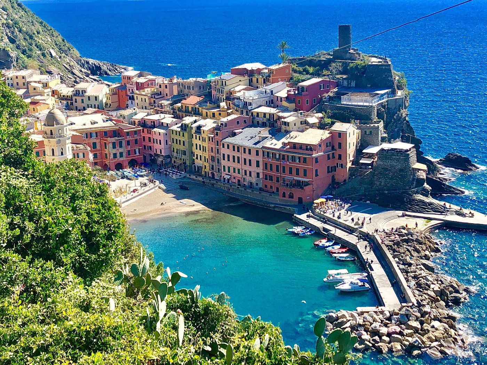

Travel
Chiangmai, Thailand


Geographical Location
Asia
Chiang Mai, nestled in the lush hills of northern Thailand, is a city that captivates with its unique blend of cultural richness and natural beauty. Situated approximately 700 kilometers north of Bangkok, Chiang Mai is the largest city in the region and serves as the capital of the province of the same name. Its geographical location is nothing short of enchanting, surrounded by forested mountains and picturesque landscapes. This charming city, often referred to as the "Rose of the North," offers visitors a delightful escape from the bustling urban life, inviting them to explore a realm where tradition meets modernity amidst a backdrop of stunning scenery.
The heart of Chiang Mai beats with a rich history that dates back over 700 years. Founded in 1296, the city was originally the capital of the ancient Lanna Kingdom. Today, remnants of its storied past are scattered throughout the city, from the ancient temples that dot the landscape to the preserved city walls and moats that harken back to a bygone era. Among the city's treasures is the revered Wat Phra Singh, a 14th-century temple known for its intricate architecture and revered Buddha image. Chiang Mai's historical sites provide a captivating glimpse into its heritage, making it a destination that seamlessly weaves together the past and present for visitors to explore and appreciate.
Italy
Geographical Location
Europe
Italy, a European country with a long Mediterranean coastline, has left a powerful mark on Western culture and cuisine. Its capital, Rome, is home to the Vatican as well as landmark art and ancient ruins. Other major cities include Florence, with Renaissance masterpieces such as Michelangelo's "David" and Brunelleschi's Duomo; Venice, the city of canals; and Milan, Italy's fashion capital.
Italy is renowned for its diverse landscapes, ranging from the Alps and the Dolomites in the north to the sun-bathed beaches and rugged coastline of the south. It's a country that boasts an incredible blend of history, art, culture, and gastronomy. From the rolling vineyards of Tuscany to the historic streets of Naples and the iconic coastlines of the Amalfi Coast, Italy offers a rich tapestry of experiences for any traveler.
Hawaii

Geographical Location
Pacific Ocean, United States
Hawaii, an isolated volcanic archipelago in the Central Pacific, is a renowned tourist destination known for its diverse landscapes of beaches, lush forests, and active volcanoes. It's a place of natural beauty, with its clear blue waters, dramatic cliffs, and vibrant coral reefs. Each island in Hawaii offers a unique experience, from the bustling beaches of Waikiki in Oahu to the serene landscapes of Maui and the Big Island's volcanoes.
Rich in culture and history, Hawaii has a unique blend of native Hawaiian traditions and a diverse mix of influences from the East and West. The spirit of Aloha is evident in its warm, welcoming people and their strong connection to the land and sea. Visitors can enjoy a range of activities from surfing and snorkeling to exploring the islands' cultural heritage at various museums, temples, and historical sites.